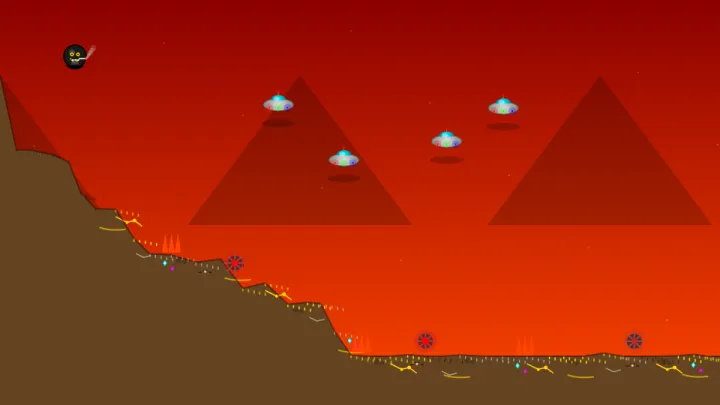
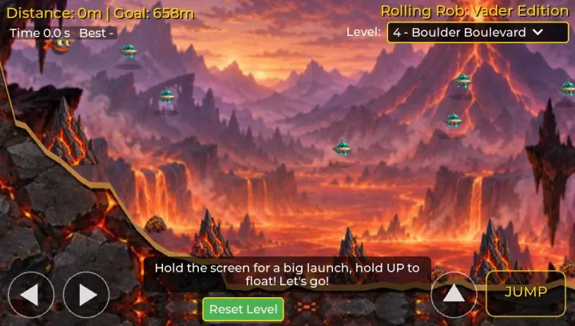
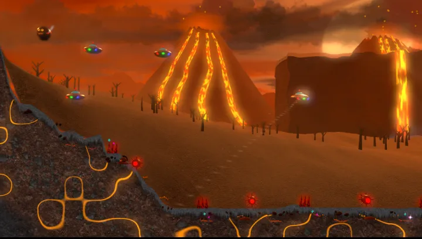

Rolling Rob as vader.nl made it, unchanged: a copy kept here with the maker's permission, so it plays offline too.
Play the original
This port: painted landscapes, music and eleven levels, plus Tetris, 2048, Snake, Breakout, Mines and fractals.

The original game itself in a 3D world, with shadows and effects, ghosts to race and a planned speedrun.
Play 3D